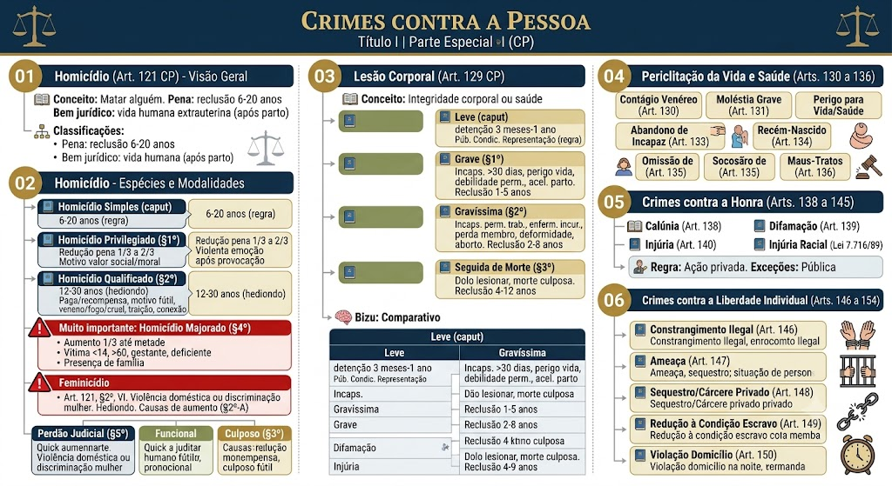

Análise completa dos crimes do Título I da Parte Especial do CP: homicídio (simples, privilegiado, qualificado, majorado, feminicídio, perdão judicial), lesão corporal (leve, grave, gravíssima, seguida de morte, culposa, doméstica, com aumento), periclitação da vida e da saúde, crimes contra a honra (calúnia, difamação, injúria) e crimes contra a liberdade individual (constrangimento ilegal, ameaça, sequestro, cárcere privado, redução a escravo, violação de domicílio).
Homicídio (Art. 121 do CP) – Visão Geral
Homicídio: matar alguém. Pena: reclusão de 6 a 20 anos.
Bem jurídico: a vida humana extrauterina (a partir do parto, com respiração ou cordão cortado). A vida intrauterina é protegida pelo crime de aborto.
Classificação do homicídio:
- Crime comum (qualquer pessoa pode ser sujeito ativo);
- Material (exige resultado morte);
- Instantâneo (consumação se esgota no momento da morte);
- De dano (lesão efetiva ao bem jurídico);
- Livre (admitido por qualquer meio);
- Comissivo (regra) e omissivo impróprio (se o agente tem dever de garantia).
Homicídio – Espécies e Modalidades
Matar alguém. Pena: reclusão de 6 a 20 anos. É a regra geral.
O agente comete o crime:
- Impelido por motivo de relevante valor social ou moral;
- Ou sob o domínio de violenta emoção, logo em seguida a injusta provocação da vítima.
Efeito: redução da pena de 1/3 a 2/3 (e não 1/6 a 1/3, conforme redação correta).
Compatibilidade: O privilégio é compatível com qualificadoras de natureza objetiva (ex.: meio cruel), mas incompatível com qualificadoras subjetivas (ex.: motivo fútil).
Circunstâncias que tornam o crime hediondo e elevam a pena (reclusão de 12 a 30 anos):
- Mediante paga ou promessa de recompensa (torpe);
- Por motivo fútil;
- Com emprego de veneno, fogo, explosivo, asfixia, tortura ou outro meio insidioso ou cruel;
- Com traição, emboscada, dissimulação;
- Para assegurar a execução, a ocultação, a impunidade ou a vantagem de outro crime (conexão).
A pena do homicídio (simples ou qualificado) é aumentada de 1/3 até a metade se o crime for praticado:
- a) contra menor de 14 anos, maior de 60 anos, gestante, ou pessoa com deficiência;
- b) na presença de ascendente, descendente, cônjuge ou companheiro da vítima (desde que presentes no momento do crime);
- c) em razão de discriminação à condição de mulher (feminicídio – já tratado no §2º, VI).
Exemplo: Matar o filho na presença da esposa – aumento de 1/3.
Conceito legal (Art. 121, §2º, VI): homicídio contra a mulher por razões da condição de sexo feminino, quando o crime envolve:
- Violência doméstica e familiar (Lei Maria da Penha);
- Menosprezo ou discriminação à condição de mulher.
Pena: reclusão de 12 a 30 anos (hediondo).
Causas de aumento (art. 121, §2º-A): de 1/3 até a metade se o crime for praticado:
- Durante a gestação ou nos 3 meses pós-parto;
- Contra menor de 14 anos, maior de 60, ou pessoa com deficiência;
- Na presença de descendente ou ascendente da vítima.
O juiz pode deixar de aplicar a pena (extinção da punibilidade) quando as consequências do crime atingem o próprio agente de forma tão grave que a sanção penal se torne desnecessária.
Hipótese típica: homicídio culposo em que o agente, por exemplo, mata o próprio filho em acidente de trânsito, sofrendo intenso sofrimento psicológico.
Requisitos:
- Crime culposo;
- Consequências do fato alcançam o agente de modo extremamente grave (material e moralmente);
- A reprovação social já é suficiente.
Aumento de pena de 1/3 até a metade se o homicídio for praticado contra:
- Integrante das Forças Armadas, polícias (federal, civil, militar, rodoviária, ferroviária), bombeiros militares, agentes penitenciários e guardas municipais, no exercício da função ou em razão dela;
- Cônjuge, companheiro ou parente consanguíneo até 3º grau dessas pessoas, em razão da função.
Fundamento: Lei nº 13.142/2015 (alterou o art. 121, §2º, acrescentando o inciso VII).
Além de ser crime hediondo, se praticado contra menor de 14 anos, aplica-se a majorante do art. 121, §4º (aumento de 1/3 até a metade). Em caso de homicídio qualificado, a pena-base já é elevada; a majorante incide sobre a pena final.
Quando o agente não tem intenção de matar, mas age com negligência, imprudência ou imperícia. Pena: detenção de 1 a 3 anos.
Aumento de pena: se o crime é cometido na direção de veículo automotor, a pena pode ser de 2 a 4 anos (art. 302 do CTB – lei especial).
Lesão Corporal (Art. 129 do CP)
Lesão corporal: ofender a integridade corporal ou a saúde de alguém.
Classificação:
- Crime material (exige resultado);
- Comum (qualquer sujeito ativo);
- Instantâneo (consumação imediata);
- De dano;
- Livre (qualquer meio).
Pena: detenção de 3 meses a 1 ano.
Ação penal:
- Em regra, pública condicionada à representação (art. 88 da Lei 9.099/95) – correção: não é privada, como constava anteriormente.
- Exceções: pública incondicionada quando houver violência doméstica (Lei Maria da Penha) ou se a vítima for autoridade (ex.: juiz, policial no exercício da função).
Resulta em:
- Incapacidade para as ocupações habituais por mais de 30 dias;
- Perigo de vida;
- Debilidade permanente de membro, sentido ou função;
- Aceleração de parto.
Pena: reclusão de 1 a 5 anos.
Ação penal: pública incondicionada.
Resulta em:
- Incapacidade permanente para o trabalho;
- Enfermidade incurável;
- Perda ou inutilização de membro, sentido ou função;
- Deformidade permanente;
- Aborto (provocado pelo agente).
Pena: reclusão de 2 a 8 anos.
Se a lesão corporal (dolosa) resulta em morte, sem que o agente a tenha desejado, a pena é de reclusão de 4 a 12 anos. Aqui o dolo é de lesionar, mas o resultado morte é culposo (crime preterdoloso).
Diferença do homicídio culposo: no homicídio culposo, não há dolo de lesionar; na lesão seguida de morte, há dolo de lesionar, e a morte é consequência não desejada.
Quando o agente causa lesão por imprudência, negligência ou imperícia, sem intenção. Pena: detenção de 2 meses a 1 ano.
Ação penal: pública condicionada à representação (regra).
Aumento de pena (art. 129, §7º): se o crime é cometido na direção de veículo automotor (infração de trânsito), a pena é aumentada de 1/3 até a metade (art. 303 do CTB).
A pena da lesão corporal (leve, grave ou gravíssima) é aumentada de 1/3 até a metade se o crime for praticado:
- Contra ascendente, descendente, irmão, cônjuge ou companheiro;
- Contra maior de 60 anos ou pessoa com deficiência;
- Na presença de descendente ou ascendente da vítima;
- Em razão de discriminação racial, religiosa, de gênero ou orientação sexual (Lei do Racismo).
O juiz pode deixar de aplicar a pena quando as consequências da lesão atingirem o próprio agente de forma grave (ex.: pai que fere o filho e sofre intenso abalo moral), desde que a lesão seja culposa e o agente não seja reincidente.
Se a lesão corporal for praticada contra a mulher no âmbito de violência doméstica e familiar (Lei Maria da Penha), a pena é aumentada em 1/3 (além da majorante genérica). A ação penal é pública incondicionada, mesmo para lesão leve.
A lesão corporal contra autoridades (ex.: policial, juiz, servidor público) no exercício da função ou em razão dela é crime de ação penal pública incondicionada, e pode ser qualificada pela majorante do §7º (discriminação) ou por outras circunstâncias (ex.: funcional).
| Critério | Homicídio (simples) | Lesão seguida de morte |
|---|---|---|
| Dolo | Matar (dolo de morte) | Lesionar (dolo de lesão) |
| Resultado | Morte desejada ou assumida | Morte não desejada (culposa) |
| Pena | 6 a 20 anos (reclusão) | 4 a 12 anos (reclusão) |
Periclitação da Vida e da Saúde (Arts. 130 a 136)
Praticar ato sexual ou manter relação íntima com alguém, sabendo estar infectado por doença venérea, sem advertir o parceiro. Pena: detenção de 3 meses a 1 ano, ou multa.
Aumento: se há intenção de transmitir a doença.
Praticar ato que possa transmitir moléstia grave (ex.: tuberculose, HIV) a outrem, sem advertência. Pena: reclusão de 1 a 4 anos.
Expor a vida ou a saúde de outrem a perigo direto e iminente. Pena: detenção de 3 meses a 1 ano, se o fato não constitui crime mais grave.
Exemplo: Dirigir em alta velocidade em via pública colocando pedestres em risco.
Abandonar pessoa que está sob seu cuidado, guarda, vigilância ou autoridade, e que é incapaz de defender-se (criança, doente, idoso). Pena: detenção de 6 meses a 3 anos.
Qualificada: se do abandono resulta lesão grave (reclusão 1 a 5 anos) ou morte (reclusão 4 a 12 anos).
Expor ou abandonar recém-nascido para ocultar desonra própria. Pena: detenção de 6 meses a 2 anos.
Qualificada: se resulta lesão grave ou morte (penas elevadas).
Deixar de prestar assistência a pessoa que está em grave perigo (ferida, inválida, desamparada), ou não pedir socorro. Pena: detenção de 1 a 6 meses, ou multa.
Exceção: se o socorro trouxer risco pessoal, não é crime.
Expor a perigo a vida ou a saúde de pessoa sob sua autoridade, guarda ou vigilância, privando-a de alimentação ou cuidados, ou sujeitando-a a trabalho excessivo ou castigo imoderado. Pena: detenção de 2 meses a 1 ano, ou multa.
Qualificada: se resulta lesão grave ou morte.
Crimes contra a Honra (Arts. 138 a 145)
Atribuir falsamente a alguém a prática de crime (fato definido como crime). Pena: detenção de 6 meses a 2 anos, e multa.
Exceção da verdade: admite-se prova da verdade se a vítima é funcionário público e o fato imputado é relativo ao exercício de suas funções.
Atribuir a alguém fato ofensivo à sua reputação (mesmo que não seja crime). Pena: detenção de 3 meses a 1 ano, e multa.
Exceção da verdade: não é admitida, salvo se a vítima é funcionário público (relativo ao cargo).
Ofender a dignidade ou decoro de alguém (xingamentos, ofensas morais). Pena: detenção de 1 a 6 meses, ou multa.
Injúria racial (qualificada): se a injúria consiste em elementos referentes à raça, cor, etnia, religião ou origem (Lei 7.716/89) – pena de 1 a 3 anos (crime de ação penal pública incondicionada).
Regra: ação penal privada (queixa-crime).
Exceções (pública incondicionada):
- Calúnia contra chefe de governo estrangeiro;
- Injúria racial (Lei 7.716/89);
- Crimes contra a honra cometidos por servidor público no exercício da função.
Retratação: O caluniador e o difamador podem retratar-se em juízo (antes da sentença) para extinguir a punibilidade; na injúria não há retratação (admite-se perdão do ofendido).
Crimes contra a Liberdade Individual (Arts. 146 a 154)
Constranger alguém, mediante violência ou grave ameaça, a fazer, não fazer ou tolerar alguma coisa que a lei não manda. Pena: detenção de 3 meses a 1 ano, ou multa.
Aumento: se há uso de arma, ou concurso de pessoas.
Ameaçar alguém, por palavra, escrito ou gesto, de causar-lhe mal injusto e grave. Pena: detenção de 1 a 6 meses, ou multa.
Privar alguém de sua liberdade de locomoção (sequestro) ou mantê-lo em cárcere privado. Pena: reclusão de 1 a 3 anos.
Qualificada: se a vítima é ascendente, descendente, cônjuge, ou se o crime é praticado com violência (penas elevadas).
Reduzir alguém a condição análoga à de escravo, submetendo a trabalhos forçados ou jornada exaustiva, ou sujeitando a condições degradantes, ou restringindo sua locomoção. Pena: reclusão de 2 a 8 anos, e multa.
Aumento: se o crime é cometido contra menor de 18 anos, ou com fim de exploração sexual, ou com violência.
Entrar ou permanecer em domicílio alheio sem consentimento do morador. Pena: detenção de 1 a 3 meses, ou multa.
Exceções: em caso de flagrante delito, desastre, ou para prestar socorro, ou durante o dia (com consentimento tácito).
Material de estudo: Crimes contra a Pessoa
Material complementar · Ver fonte no GitHub
Crimes contra a Liberdade Individual (Arts. 146 a 154)
Ameaça (Art. 147)
Ameaçar alguém, por palavra, escrito ou gesto, de causar-lhe mal injusto e grave. Pena: detenção de 1 a 6 meses, ou multa.
Ação penal: pública condicionada à representação (regra).
Redução à Condição Análoga à de Escravo (Art. 149)
Reduzir alguém a condição análoga à de escravo, submetendo a trabalhos forçados ou jornada exaustiva, ou sujeitando a condições degradantes, ou restringindo sua locomoção. Pena: reclusão de 2 a 8 anos, e multa.
Aumento: se o crime é cometido contra menor de 18 anos, ou com fim de exploração sexual, ou com violência.
Ação penal: pública incondicionada.
Mapa-mental
